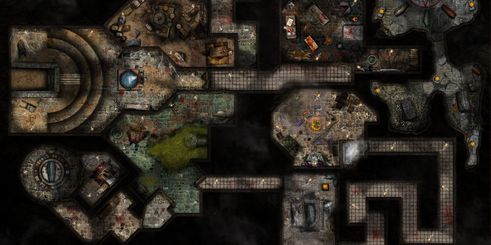

Um dia desses encontrei um mapa no porão da minha casa e estava escrito que existia uma masmorra cheia de tesouros e eu sai de casa atrás dessa masmora para encontrar esse tesouro!

Você começa sua jornada na sua vila, subindo o Pico da masmorra ao amanhecer para encontrar o tesouro.

Na floresta. No mapa, um dos caminhos indica que para localizar a entrada para a masmorra você deve procurar uma trilha coberta de arvores.